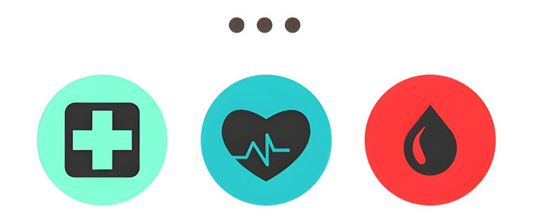
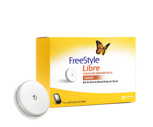

Cómo convertí una comunidad educativa en el motor de lanzamiento de un dispositivo médico innovador en Colombia.
Lideré el desarrollo de «Diabetes en Control», una comunidad en redes sociales enfocada en educación, diseñada para construir audiencia calificada — y que se convirtió en el ecosistema principal para el lanzamiento de FreeStyle Libre de Abbott.
Pincharse más de 11 veces al día para monitorear glucosa genera incomodidad real y rechazo profundo hacia la enfermedad y sus métodos de control.
El dolor generaba descuido y pérdida de control sobre la enfermedad, agravando las consecuencias de salud a largo plazo.
FreeStyle Libre eliminaba el dolor con tecnología NFC, pero era desconocida. Sin educación previa, no existía demanda.
Estas barreras limitaban directamente la adopción del producto. Sin educación primero, no había conversión posible.

La gente no necesita el producto primero.
Necesita entender su enfermedad y confiar.
El ecosistema en acción.